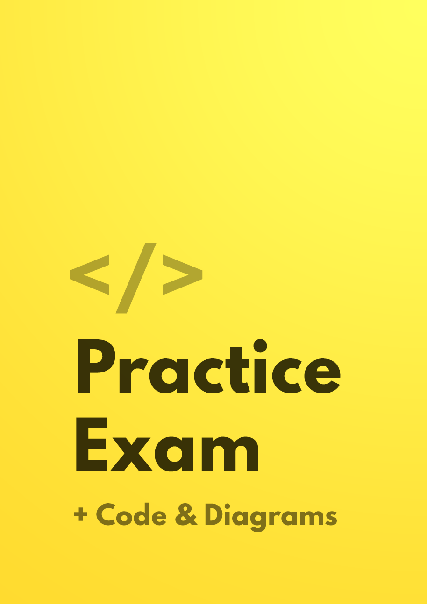

I took the test exactly two weeks after I started studying. Your book was an integral part of my success. Thank you for writing it. The graphics are very helpful for visualizing what's going on.
I've already recommended it to a few others.
Not ready to buy? Get a Free Chapter

“Your book was an integral part of my success.”
“Love the book! Very straight forward.”
“It covers all the questions I have about how Kubernetes works… super-easy to follow”
 Matthew Palmer is a full stack web developer from Sydney. He was part of the CNCF Certified Kubernetes Application Developer beta program. He’s one of the first developers in the world to achieve CKAD certification.
Matthew Palmer is a full stack web developer from Sydney. He was part of the CNCF Certified Kubernetes Application Developer beta program. He’s one of the first developers in the world to achieve CKAD certification.
He’s scaled web services at Australia’s largest news organization, built productivity SaaS applications for leading startups, and taught Computer Science students at the University of New South Wales.
Learning Kubernetes is hard.
The documentation is disorganized and you have to grind through thick wads of YAML.
It’s all so poorly structured that simple Kubernetes concepts feel like a visit to the dentist.
We’re here to help. Learn Kubernetes in a week. Smash your CKAD exam.
Get the lean and focused eBook that makes you a Kubernetes expert in a week.
It’s ideal for software engineers who’ve built things with Node.js, Ruby on Rails, Python, Java, or PHP.
The 107 page PDF with source code and YAML examples teaches you exactly what you need to deploy your applications in Kubernetes.

On the fast-track to CKAD certification? Want to make sure you pass your CKAD exam on the first attempt?
The #1 reason people fail the CKAD exam is because they don’t do enough practice exercises.
This is a must-have resource for passing your CKAD. You’ll receive the book, access to an exclusive GitHub repo, and a 30 question practice exam with solutions.
We’re so confident in our resources that we offer a no-questions-asked refund guarantee. Simply email us to get your money back!
I took the test exactly two weeks after I started studying. Your book was an integral part of my success. Thank you for writing it. The graphics are very helpful for visualizing what's going on.
I've already recommended it to a few others.
It covers all the questions I have about how Kubernetes works internally, and the whole book is super-easy to follow.
Thanks again for the book!
Love the book! Very straight forward.
I didn't write too much YAML to pass the test—you can use imperative commands as well.
 Ron Freiburg, Engineer at HomeNet Automotive
Ron Freiburg, Engineer at HomeNet Automotive
Originally went through the LFD259 Kubernetes for Developers training course and wasn’t quite satisfied with the preparation.
I looked for more resources and stumbled upon this book and was very impressed. Well organized and packed with clear information, I was more than happy to upgrade to the full package.
I would highly recommend for anyone preparing for the CKAD exam or just looking for a solid reference for understanding Kubernetes.
I passed my CKAD exam and your prep course was a huge help!
Thanks a lot! It's absolutely worth it!
Thanks for your exam-prep materials, they were genuinely helpful. I did my CKAD on Monday and whilst time was tight (thanks for the warning!) I passed without a problem.
Nothing really surprised me in the exam thanks to your practice test.
Not ready to buy? No worries!
Just enter your email and we’ll send a little sample your way.
To help give you a small taste of the book, we’ve published some great articles on Kubernetes…

Take our free multiple choice CKAD Knowledge Quiz to test your understanding of the Kubernetes certification curriculum.
* All purchases come with a no-questions-asked refund policy. Just send us an email and we’ll refund the full purchase price.
* Many readers use their employer’s personal education budget to purchase this book. If you need it, we can help convince your manager.
* Want to train your whole team in Kubernetes? Contact us for bulk purchase discounts.